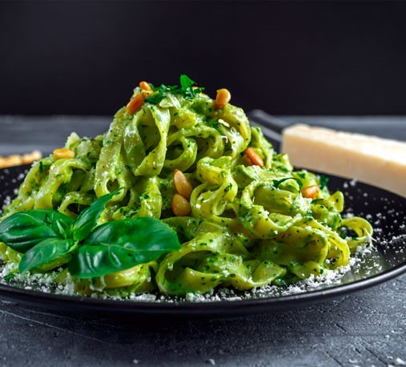
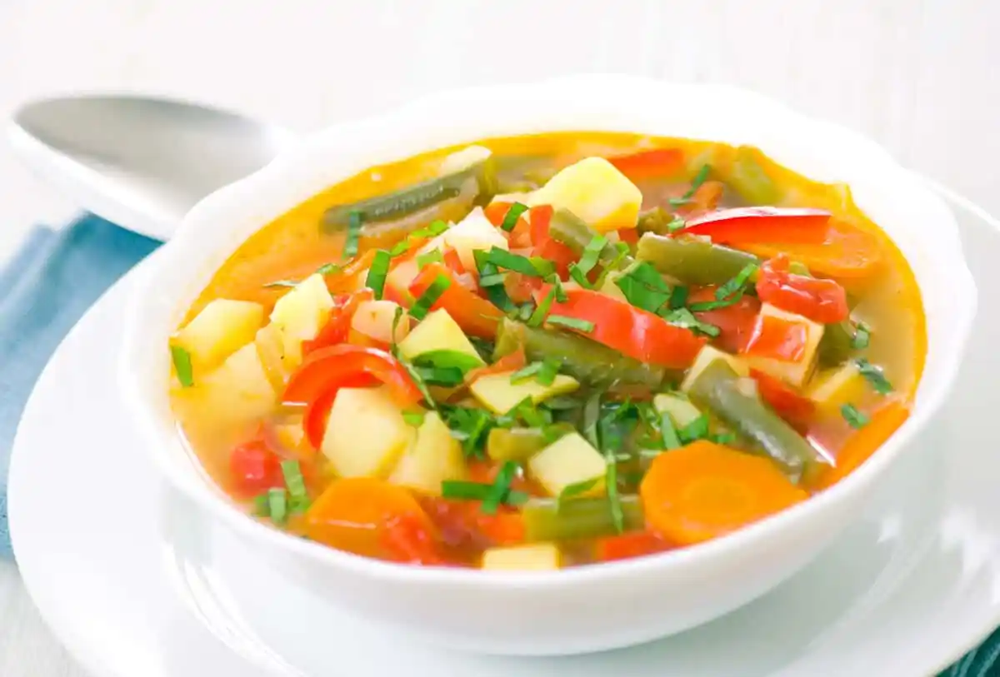

Más Recetas
-

Panqueques de avena
Una opción saludable y rápida para el desayuno.
-

Pasta con pesto
Un plato italiano clásico, fácil de preparar.
-

Sopa de verduras
Ideal para los días fríos, llena de nutrientes.